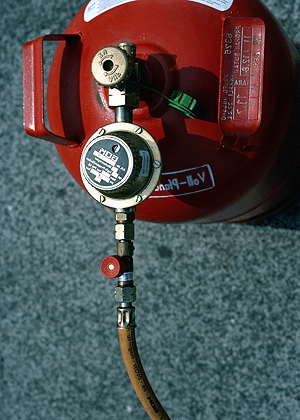

Die sicherheitstechnisch einwandfreie Funktion von Maschinen, Geräten, Anlagen und Einrichtungen (zum Beispiel: Absturzsicherungen, Hebezeuge, Hubarbeitsbühnen, Personenaufnahmemittel, lärmgeminderte Geräte und Maschinen, Geräte und Maschinen mit Staubabsaugung, vibrationsarme Maschinen) wird unterschiedlich erreicht: